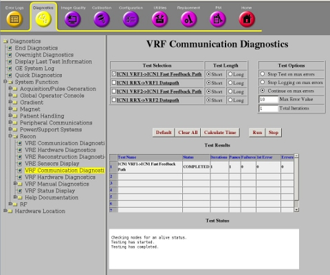
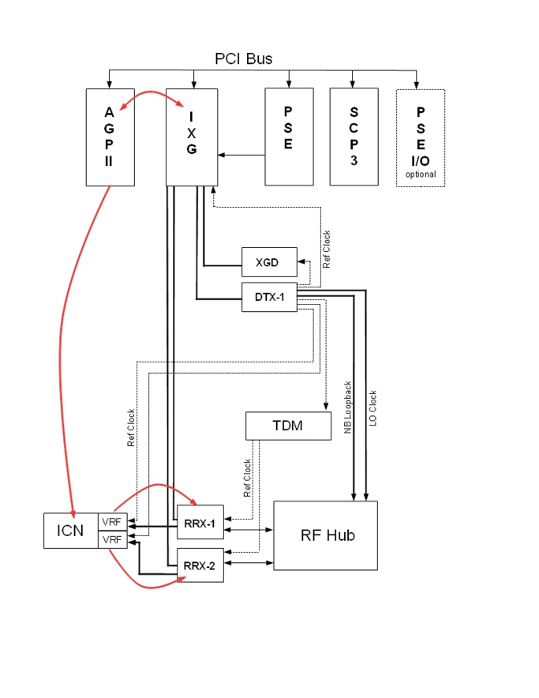
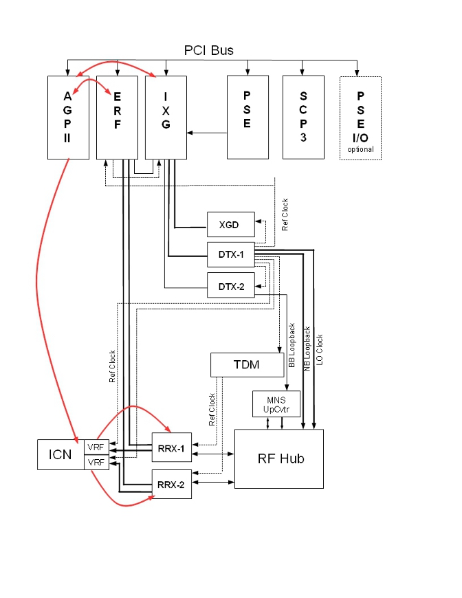

Operating Documentation
Direction 5670006, Rev# 1
Discovery MR750w GEM Service Methods
Module Version 5.0, Version Date 10/12/11
Operating Documentation |
Diagnostics → System Function → Recon → VRF Communication Diagnostics
Diagnostics → Hardware Location → PGR Cabinet → VRF Communication Diagnostics
Illustration 1: VRF Communication Diagnostics

The purpose of the ICN VRF→ICN Fast Feedback Path is to test the feedback path between VRF and AGP.
Fast feedback path between the VRF and AGP
No special requirements
Illustration 2: ICN Fast Feedback Data Path for 4170 ICNs - Standard Configuration

Illustration 3: ICN Fast Feedback Data Path for 4170 ICNs - With MNS

| NOTE: | (For 32-channel 4170 systems) Use the HART log to identify VRF1 and VRF2. As indicated in VRF Hardware Diagnostic link below. |
Select ICN VRF→ICN Fast Feedback Path from the VRF Communication Diagnostics screen.
| NOTE: | If there is more than one ICN, select ICN1 and ICN2 for this diagnostic. |
Click [Run].
Review the Test Results table to see the result of the diagnostic.
This diagnostic has either a passed or failed status. If the diagnostic has failed, review the error log and corresponding extended error messages for subsequent actions. Additional responses to the diagnostic's failed result are outlined in the table below.
Table 1: Diagnostic Results
| Result | Description | GE Field Action |
|---|---|---|
| Passed | The data path passed the diagnostic. | No further action required. |
| Failed | The data path failed the diagnostic. |
|